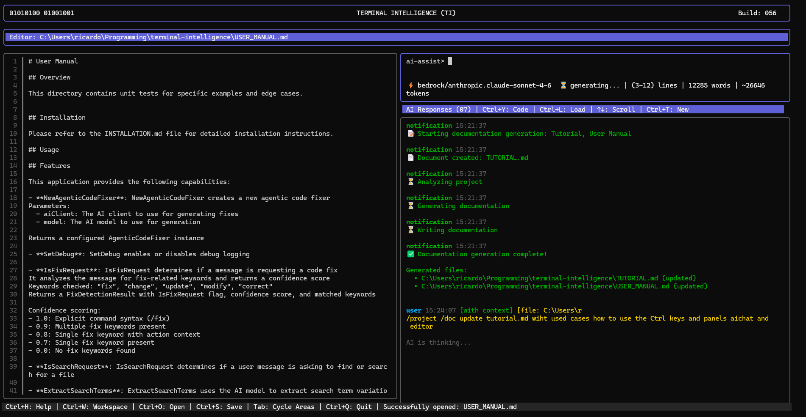
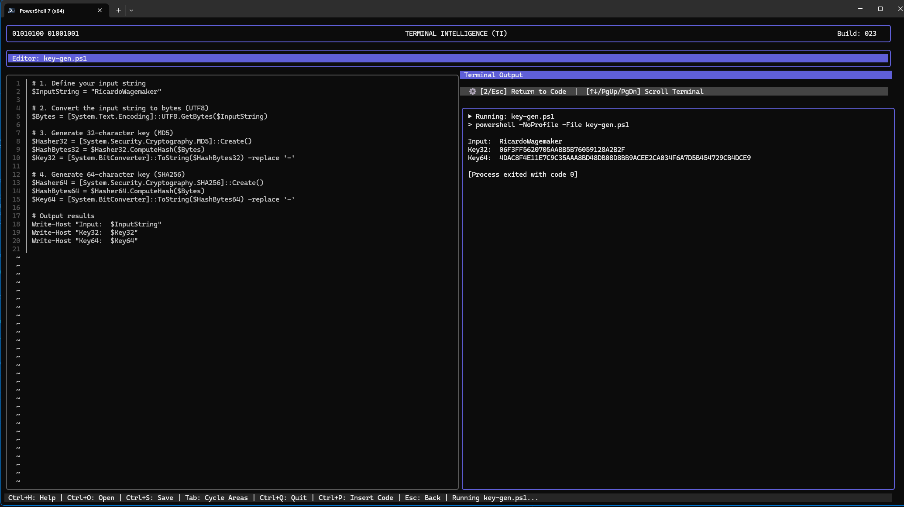
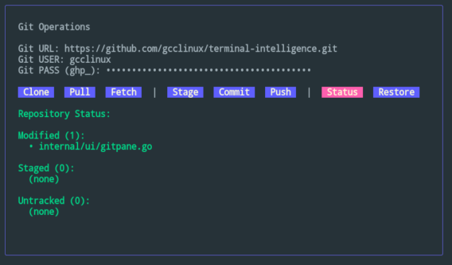
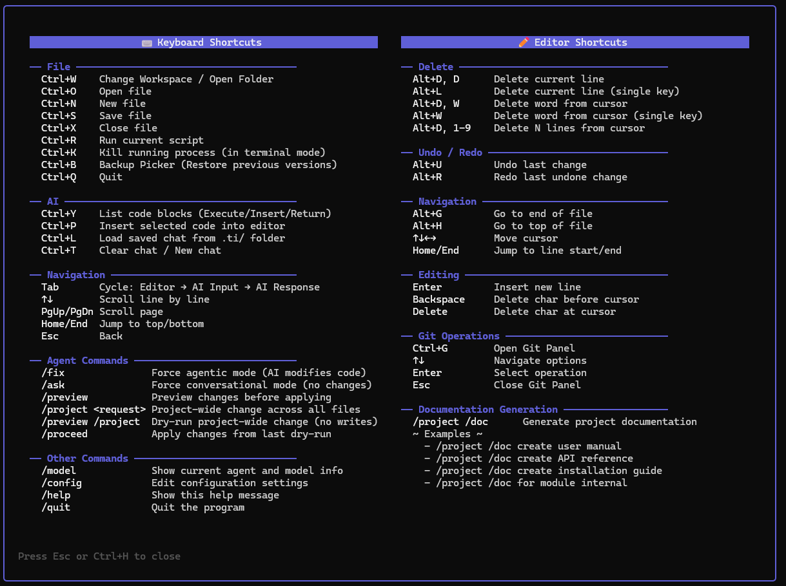

A lightweight, highly responsive CLI-based IDE with integrated AI assistance. Built in Go to run seamlessly in your terminal with unparalleled speed.

Everything you need without leaving your keyboard.
The AI autonomously reads, analyzes, and modifies code across your open files. Real-time patching and robust preview modes ensure you stay in control.
Chat directly with your code. The AI assistant understands your workspace context and can explain complex functions or answer developmental questions.
Run sweeping architectural changes with a single command. The AI scans your directory, finds relevant files, and applies precise SEARCH/REPLACE patches.
A native Git interface directly within the IDE. Stage, commit, push, and review status panels without needing an external Git installation.
Write and instantly execute Bash, PowerShell, Python, Markdown, and Go natively. Watch the output appear seamlessly in your AI pane.
Blazing fast, cross-platform performance. Ships as a single dependency-free binary for Linux, macOS, and Windows.
Toggle seamlessly between code editing and AI prompting. Use simple keyboard shortcuts to ask questions and have the AI write new implementations or find bugs within your current buffer.
/ask
Stop context switching to the command line just to commit your work. TI features a highly robust internal Git UI that makes managing your repository intuitive and quick.

Quickly access all of TI's advanced features through intuitive menus. Manage backups, workspaces, file trees, and configuration effortlessly.

Today's IDEs are overwhelmingly heavy. They come packed with massive dependencies, require constant background interpreters, and consume excessive amounts of memory, CPU, and storage. All of this translates directly to a colossal, often ignored, carbon footprint.
The primary goal of Terminal Intelligence is to change this paradigm. We believe developers shouldn't have to sacrifice our planet to write great code. By building a lightning-fast, dependency-free binary in Go, we deliver all the advanced agentic features you expect from a modern IDE, but with a drastically smaller environmental impact.
Beyond just a lightweight runtime, we are building local intelligence directly into the application to minimize reliance on heavy cloud AI models where possible. And because we believe in transparency and community-driven impact, the entire project is 100% open source.
Let's write incredible code, while leaving a smaller footprint behind.
Download the single binary and start writing code faster with the power of generative AI.
Or build from source: go build -o ti cmd/ti/main.go